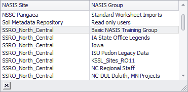
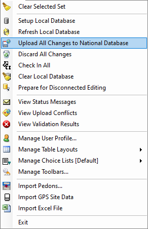

Exercise 2.1 – NASIS Login and Refresh
Open NASIS
Start the NASIS Client by searching or browsing to it in the Windows start menu. You may want to pin the NASIS Client program to your taskbar for easy access in the future. Do this by right clicking on the icon in the taskbar after you have started the client and choosing “Pin to taskbar” from the context menu that appears.
Login
NASIS will attempt to do a sign in automatically if you are already using a LincPass for accessing your computer. If this is not successful you will need to select your login method and enter your password or PIN to complete the login process.
Refresh
The first and most important task after login to the NASIS client is the refresh process. The data you have locally on your computer is only as up to date as the last time you refreshed your data. This means any new or changed data will not be visible to you unless you initiate the refresh process. This can be done by clicking the NASIS menu and selecting Refresh Local Database.

Perform the refresh on your local database and ensure it was successful. You will see a status box appear:

Depending on when you last refreshed your data and how many edits have been completed or new data added it may take a few minutes. This is yet another reason to refresh your data as the first thing you do, every time you start NASIS. The more often you refresh, the less data you download and the less time it will take. You should also see a status message indicating the refresh has completed.

Occasionally, you may find the refresh is taking an unusually long time, which can be caused by a poor connection to NASIS or because of issues with the National NASIS server. You can cancel the refresh as long as the cancel button remains on the screen, but after a certain point, the refresh can no longer be cancelled, and you must allow it to complete.
Default NASIS Group
If you completed the NASIS pre-course assignment, this next process should be familiar to you. Click on the NASIS menu and select “Manage User Profile”.

Note your current default NASIS Group and remember it. We will be using a special training group for the duration of the training, and you will need to switch back to this previous group once the training is over. Select the “Basic NASIS Training Group” from the list. If you do not see this group reach out to your mentor to confirm you have been added to the group in NASIS. It is possible your name was missed, or another name was added inadvertently.

Remember, you must also click the save button before closing the Manage User Profile window to keep any of the changes you have made.
Upload Changes
The final step to commit the changes you have made to your user profile is to upload all changes to the national database. Do this by selecting the “Upload All Changes to National Database” menu option.

End of Exercise
Exercise 2.3 – Sort and Filter
Sorting
Open the “NASIS Site” table. Notice there are already rows of data present in this table. This table is unique, its data is already loaded into your table view by default.
Practice sorting the data in the columns by clicking on the column names. Notice the orientation of the triangle icon indicates whether the column is sorted in ascending (upright triangle) or descending (inverted triangle) order.
Practice sorting multiple columns by holding down the shift key while clicking each column to sort. Take a screenshot of your custom sort and save to send to your mentor later, then clear your sorting by right clicking a column and selecting “Clear All Sorting”
Filtering
Filtering data can be done several different ways. Hover over a column name to see a funnel icon appear in the right side of the column name. Clicking the funnel will open a list of unique values contained in the data. At the bottom right of the list window, click and drag near the edge where the diagonal lines are to adjust and expand the view if the text is truncated. Select an item in the list to show only those rows of data that match that value. Select multiple values if needed by checking the boxes to the left of the named values and then clicking the ok button. Alternatively, you can cancel the operation by clicking the cancel button.
Practice this filtering technique and take a screenshot of your filtered data and save it to send to your mentor later.
When a filter is active you will see a grey bar at the bottom of the table viewer providing the column name and value that is being filtered. Use the checkbox to turn the filter on or off. Clicking the inverted triangle or on the text, opens a list of previously used filters to select, which entries can be deleted by clicking the red circle with an x which appears to the right after hovering over an entry. Remove the filter completely by clicking the x button on the left. You may also choose to edit your filter by clicking the “Edit Filter” button on the right. This will open the main filter editor. Right clicking the column name will also bring up a menu where you can select this filter editor.
Practice adding additional filter criteria for the data using the editor. If you get stuck, ask a mentor for assistance. Take a screenshot of the filter editor with your additional filter criteria and save it to send to you mentor later.
Use the auto-filter row by right clicking on the column name and selecting “Show Auto Filter Row”. A new row appears at the top of the table separated by a thicker gray line. The filter operates as you type the filter criteria into the column you wish to filter. The icon at the left of each column can be clicked to select the filtering method.
Practice using the auto-filter row on the columns and take a screenshot of the filtered results and save to send to your mentor.
Submit Screenshots
Submit all your screenshots taken during the exercise by placing them in your folder in the exercise submission folder on Microsoft Teams and describe the sorting and filtering you completed.
Remove Filters and Sorting
Before you continue, remember the filters and sorting you have done during the exercise will be retained until you decide to change them. Remove your filters and clear all sorting to finish the exercise.
End of Exercise